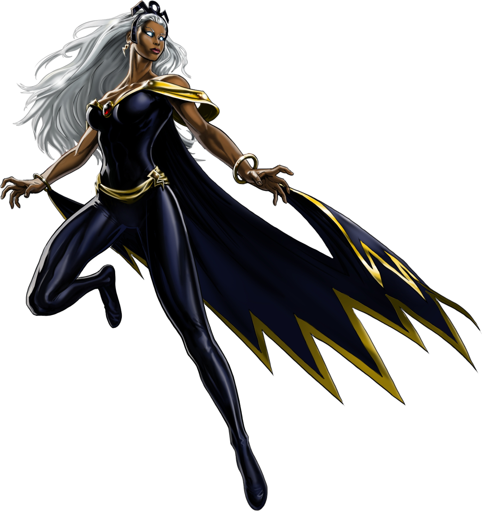

X-Men Heroes
Wolverine
Wolverine, also known as Logan, is a mutant with regenerative healing powers, enhanced senses, and retractable adamantium claws. He's one of the most ferocious and durable members of the X-Men, known for his tough attitude and unwavering loyalty to his allies.
Storm
Storm, Ororo Munroe, is a powerful mutant who can manipulate the weather. She has been a leader of the X-Men and is known for her wisdom, strength, and fierce will. Her abilities make her one of the most formidable mutants on the planet.
Professor X

Professor Charles Xavier is the founder of the X-Men and one of the most powerful telepaths in the world. He uses his abilities to promote peaceful coexistence between humans and mutants, and he leads the X-Men with a vision of hope and unity.